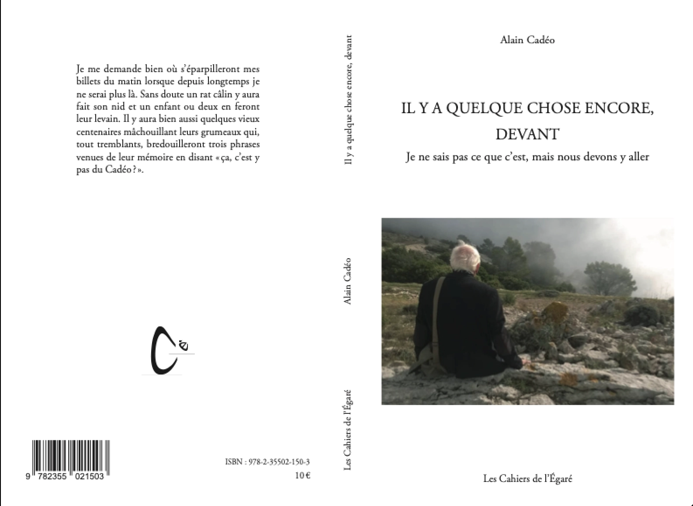
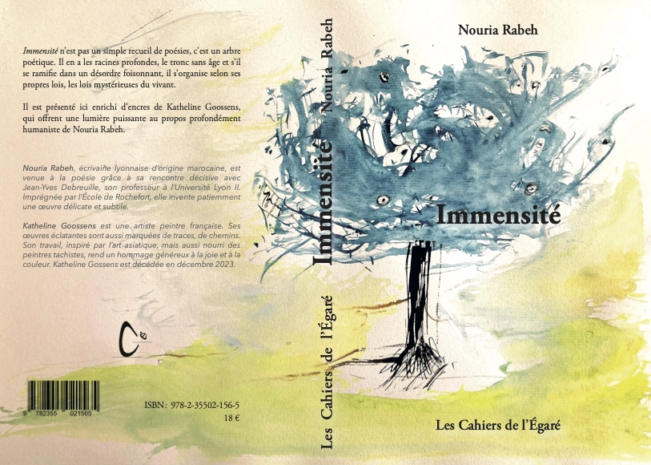
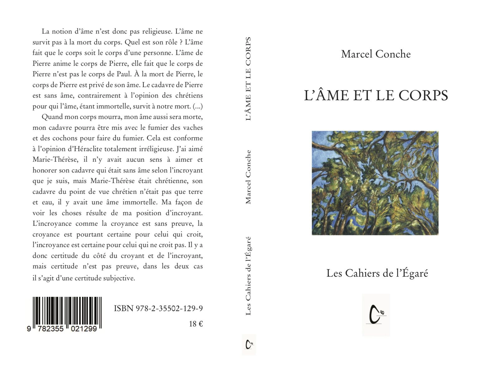
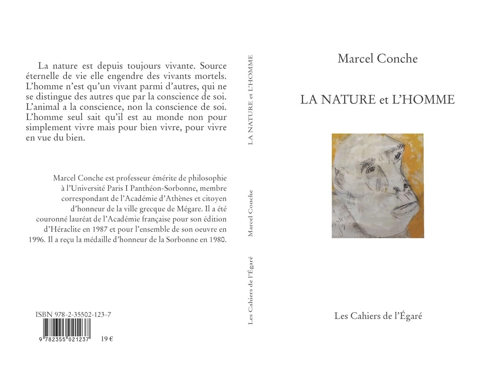
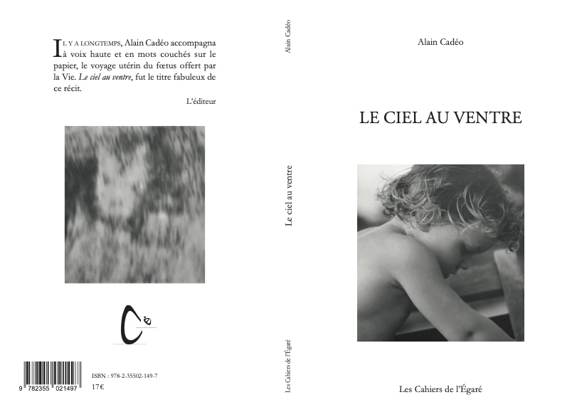

IL Y A QUELQUE CHOSE ENCORE, DEVANT
Je ne sais pas ce que c’est, mais nous devons y aller - Alain Cadéo
Je me demande bien où s'éparpilleront mes billes du matin lorsque depuis longtemps je ne serais plus là.

82 pages, 20 photos, format 13,5 X 20,5, PVP 10 €Sans doute un rat câlin y aura fait son nid et un enfant ou deux en feront leur levain. Il y aura bien aussi quelques vieux centenaires mâchouillant leurs grumeaux qui, tout tremblants, bredouilleront trois phrases venues de leur mémoire en disant "ça, c'est y pas du Cadéo ?"
ISBN 978-2-35502-150-3
Immensité - Nouria Rabeh
5 mouvements
UNE ODE A L'HUMANITE
TERRITOIRES DE LA JOIE
UN JARDIN DE LUMIERE
ENVOL
A ciel ouvert

242 pages, illustré par des peintures de Katheline Goossens, PVP 18 €La poésie
comme un chemin
une présence
au milieu du monde
un cœur géant
qui englobe nos êtres
dans l'immensité
ignorer ce joyau
c'est se perdre
dans la désillusion
reconnaître en soi
cette part florissante
c'est cela
l’humanisme
ISBN 978-2-35502-156-5
L'âme et le corps - Marcel Conche
La notion d’âme n’est donc pas religieuse. L’âme ne survit pas à la mort du corps. Quel est son rôle ? L’âme fait que le corps soit le corps d’une personne. L’âme de Pierre anime le corps de Pierre, elle fait que le corps de Pierre n’est pas le corps de Paul. À la mort de Pierre, le corps de Pierre est privé de son âme. Le cadavre de Pierre est sans âme, contrairement à l’opinion des chrétiens pour qui l’âme, étant immortelle, survit à notre mort. (...)

248 pages, 14 X 22, 130 chapitres, PVP : 18 €Quand mon corps mourra, mon âme aussi sera morte, mon cadavre pourra être mis avec le fumier des vaches et des cochons pour faire du fumier. Cela est conforme à l’opinion d’Héraclite totalement irréligieuse. J’ai aimé Marie-Thérèse, il n’y avait aucun sens à aimer et honorer son cadavre qui était sans âme selon l’incroyant que je suis, mais Marie-Thérèse était chrétienne, son cadavre du point de vue chrétien n’était pas que terre et eau, il y avait une âme immortelle. Ma façon de voir les choses résulte de ma position d’incroyant. L’incroyance comme la croyance est sans preuve, la croyance est pourtant certaine pour celui qui croit, l’incroyance est certaine pour celui qui ne croit pas. Il y a donc certitude du côté du croyant et de l’incroyant, mais certitude n’est pas preuve, dans les deux cas, il s’agit d’une certitude subjective.
SBN 978-2-35502-129-9
La nature et l’homme - Marcel Conche
LXVI
Le non engagement
Si l’on considère l’ensemble de ma vie, on peut dire que j’ai choisi le non engagement.

192 pages, 14 X 22, PVP 19 €Mon cousin germain Fernand s’est engagé dans l’armée. Il est venu à Altillac se montrer chez mes parents, avec son bel uniforme de sergent-chef. Je n’ai pas vu en lui un exemple à suivre et je ne l’ai pas admiré. Mais j’ai souffert lorsqu’il a été tué à la guerre.
Je n’ai combattu pour aucune cause : ni la cause politique, car je n’ai adhéré à aucun parti, ni la cause nationale, car je ne me suis pas engagé dans la Résistance, contrairement à Marie-Thérèse et à mon père, ni la cause internationale.
Nous vivons tous une brève vie. Il ne faut pas par imprudence, la raccourcir encore – en fumant la cigarette, en buvant des apéritifs alcoolisés, en pré- férant trop souvent le vin à l’orangina, en fatiguant son corps par des efforts excessifs. Il faut surtout ne pas risquer de la raccourcir en s’engageant dans des actions où l’on risque sa vie.
Je pense aux guerres de 14-18 et de 39-45. Je n’ai pas participé à la guerre de 39-45. Il est certain que je n’aurais pas participé à celle de 14-18. Cette certitude tient à la conscience que j’ai de moi-même.
« Connais-toi toi-même » : telle est la leçon des Grecs. Je me connais en ce sens que je sais ce que je veux et aussi ce que je peux vouloir et ne vouloir pas.
ISBN : 978-2-35502-123-7
Le ciel au ventre - Alain Cadéo
Mardi 24 juillet 1990
23 heures.

220 pages, 13,5 X 20,5, PVP 17 €"tu arrives demain matin. J’ai rêvé pendant neuf mois d’un être que je ne connais pas et d’un seul coup on m’annonce sa venue imminente. Il faut que je reste calme."
ISBN 978-2-35502-149-7